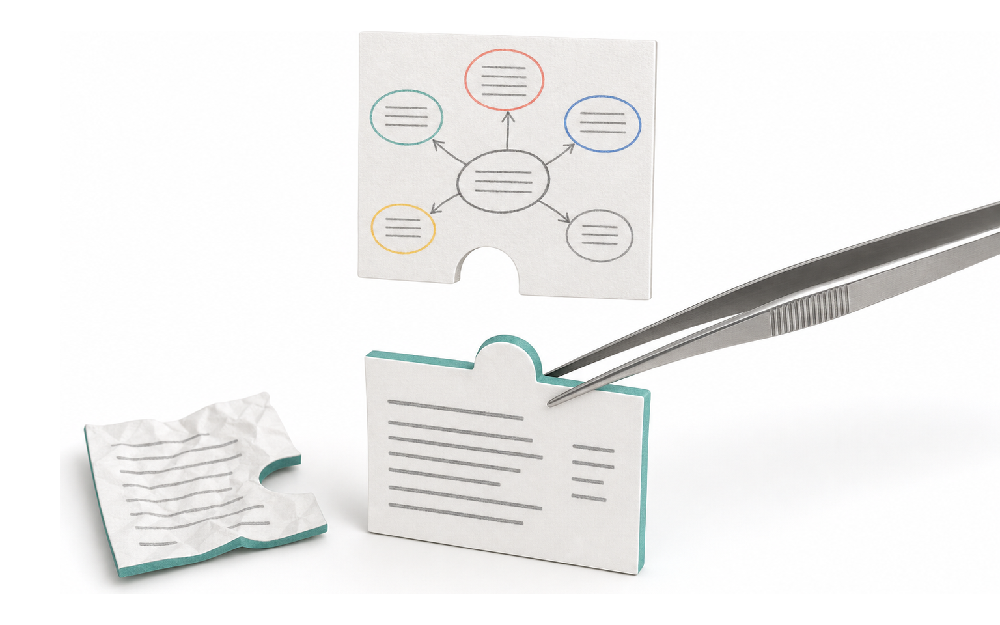
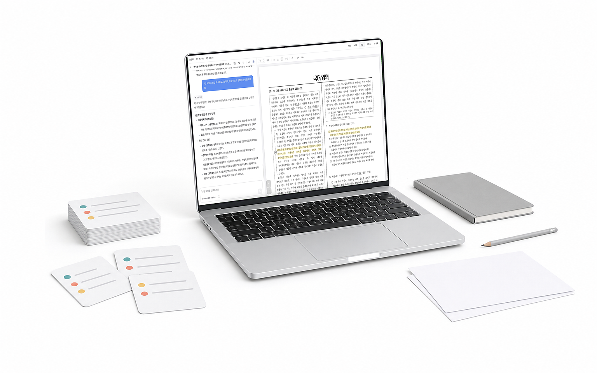

Research & Development
출제 업무에 AI를 적용하기 위한 연구·개발 일지 및 보고서입니다.

CRPO
언어모델의 Reasoning이 독서 지문 품질에 미치는 영향

KSAT Agent
AI 기반 수능국어 독서 영역 출제 도구
Predictor 1.0
신뢰할 수 있는 문항 난이도 추정을 위한 ML 연구
Archive
필요한 문항을, 상황에 맞는 방법으로 찾아내기

MCP
GPT·Gemini·Claude와 협업하여 좋은 문항 만들기

Roadmap
성공적인 AX를 위한 기술 연구·개발 로드맵

EqASM
흩어진 수식 조각들을 LaTeX로 조립하기

Pipeline API
HWP·PDF 속의 문항 데이터들이 AI에게 전달되기까지